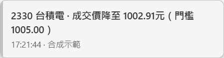
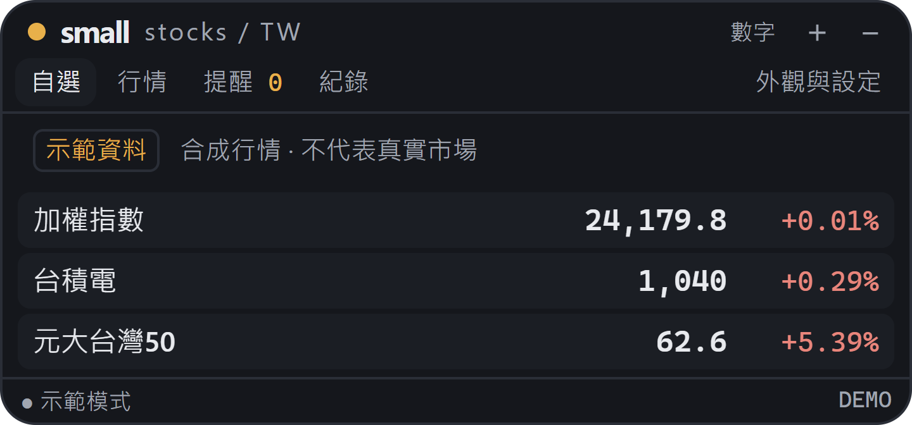
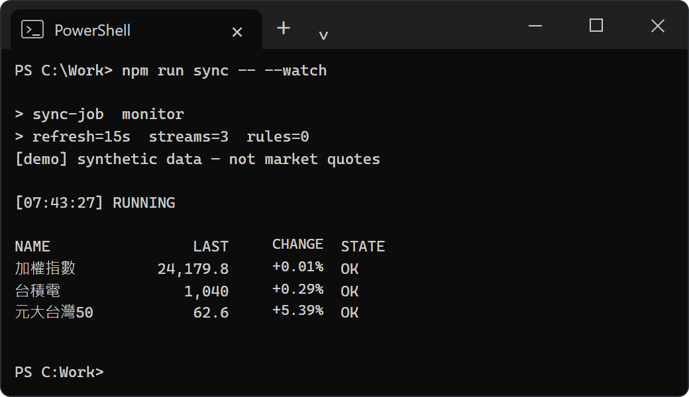
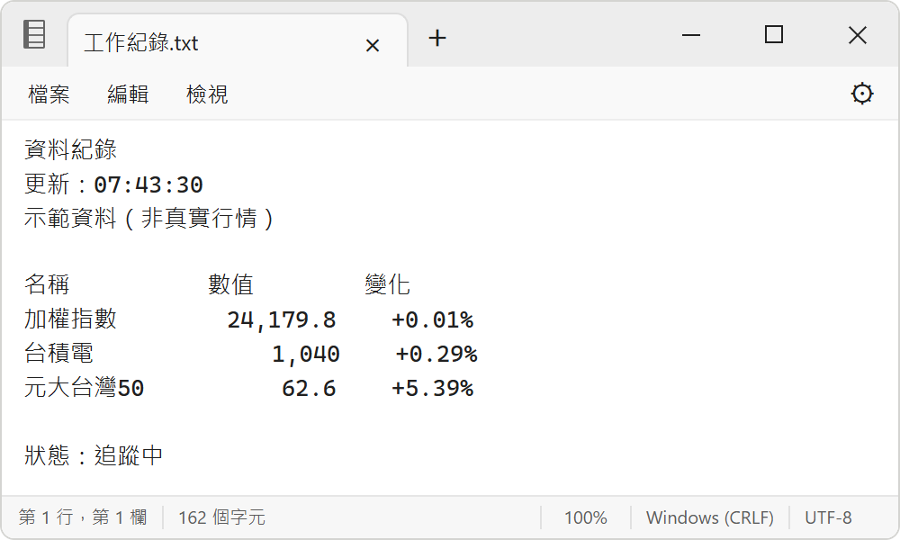
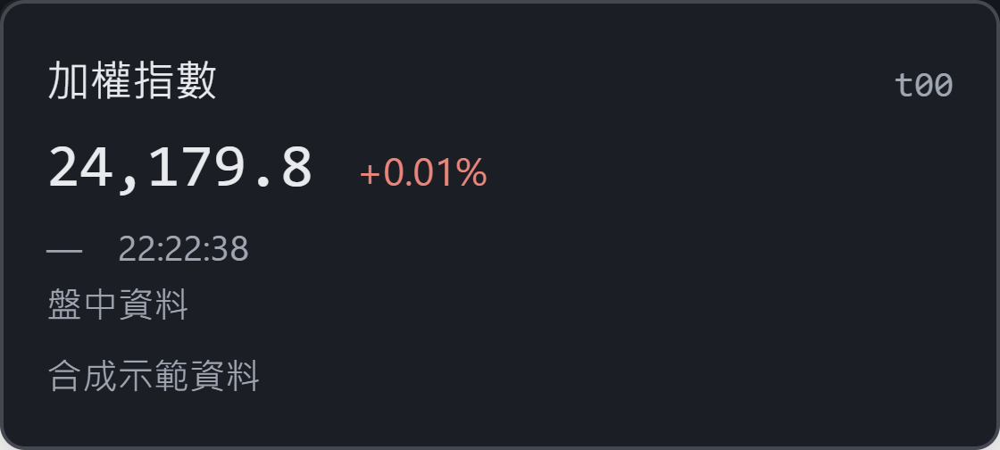
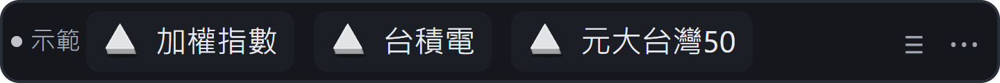

small 系列的台股桌面小工具
台股，
縮小著看。
讓幾檔自選股，安靜待在螢幕角落。
瞄一眼知道變化，有事再提醒你。
免費開源 · 不用帳號 · 本機直接取得資料


適合不同工作的樣子
看盤，也能像
你平常開著的視窗。
寫程式時像終端機，做其他工作時像文字文件。讓自選股融入桌面，重要的變化再用通知告訴你。
終端機

文字文件

切換樣子，監看照常。 自選、提醒、事件紀錄共用，更新時保留輸入與文字選取。
置頂，也可以不要。 設定會記住你的選擇；被其他視窗蓋住，監看仍繼續。
需要時，三鍵藏好。 Windows Ctrl＋Alt＋S；Mac 對應 ⌘＋⌥＋S。
畫面為合成示範行情。Mac 畫面是 Intel Mac 上的原生視窗截圖，尚無 Mac 試用包，真實行情與長時間使用尚未驗證。兩種外觀都不會執行系統指令或修改其他文件。
想保留 small 的美術，就看這一版
熟悉的元件，
剛剛好的資訊。
喜歡有一點顏色、有一點棋子感，就用 small。價格、走勢，或只是今天的方向，都放在一小列裡。
名稱、價格、漲跌。剛剛好。
一檔一列，數字對齊。代號可以藏起來，滑鼠移上看資料時間，點一下再開完整行情。
實際列高 22 px · 畫面放大展示
同一套圓角、字體與厚度感，也能收起紅綠配色。

小三角形保留 small 系列的厚度感：正面明亮，側邊微深。紅漲綠跌；平盤與未確認資料會用不同符號標示。
把提醒交給小工具
有變化，
再來找你。
自己決定哪個價格、哪個漲跌幅值得留意。跨過門檻時，用一句話告訴你，不搶走正在打字的焦點。
- 提醒什麼
- 成交價或漲跌幅，向上／向下跨過指定門檻。
- 怎麼提醒
- 只記錄、小細條、角落卡片，或關閉。
- 提醒幾次
- 一次，或每天一次。記錄留在本機，方便回看。
1,005 元
收盤以後，也有東西可看
今天收在哪，
前幾天怎麼走。
休市時顯示最近可用的正式收盤，清楚標上資料日期。點進一檔，就能按月份回顧每日開高低收、漲跌與成交量。
第一次下載也能取得來源有提供的歷史資料；盤中走勢可補上當天可取得的分鐘資料。尚未取得、缺點或只有局部時，都會如實標示。
看完整使用說明有在用 AI 助理，再加上這一層
用一句話，
設定你要的提醒。
透過選配的本機 MCP，讓你的 agent 讀自選股、整理事件，或把自然語言變成提醒規則。監看由桌面程式執行，agent 關掉也繼續。
平常使用不用 LLM、API Key 或模型帳號。定時摘要需由你的 agent 工具另行排程。
「幫我追蹤台積電，成交價向下跨過我設定的價格時，用灰階細條提醒，每天一次。」
看 MCP 連接設定
先開啟桌面程式，把下方路徑換成你的執行檔位置，再加入支援本機 MCP 的工具。
{
"mcpServers": {
"smallstocks-tw": {
"command": "C:\\你的路徑\\smallstocks-tw.exe",
"args": ["--mcp"]
}
}
}不用把整個桌面交給股價
留一個小角落，
給你的自選股。
Windows 本機預覽版 0.1.11。免費、開源，提供免安裝與安裝版本。
Windows 已完成本機試用驗證，公開安裝包尚未發布。可以先到 GitHub 查看原始碼與版本進度。
查看 GitHub 版本區 ↗需要 WebView2；執行檔尚未簽章，Windows 或公司裝置管理可能攔截。尚無自動更新。Mac 尚無試用包，未開放下載。
網站只介紹產品，不提供即時行情；不需要提供券商帳號。
開始之前，可能會想問
不用 AI 助理，也可以正常使用嗎？
可以。自選股、監看、提醒與歷史都由獨立桌面程式提供。MCP 只是讓 agent 也能操作同一份設定。
價格會即時到什麼程度？
一般模式預設約每 15 秒批次取得行情，錯誤時會退避重試。這不是逐筆報價，也不保證零延遲或不漏報。過期、缺成交價與亂序資料不會觸發提醒；分鐘線僅供顯示，不參與提醒判定。
會經過你們的伺服器嗎？
不會由開發者轉送行情。桌面程式由使用者電腦直接請求資料來源，設定與事件保存在本機。若讓雲端模型讀取 MCP，內容可能會傳給你選用的模型服務。
可以下單、看券商庫存，或提醒爆量嗎？
目前不提供下單或券商庫存，也沒有爆量、大單、封板／開板或公告提醒。首版以自選股、價格與漲跌幅跨越規則為主。
支援哪些標的？
支援來源可取得的上市、上櫃股票與 ETF，以及加權／櫃買指數。可搜尋名稱、代號，或一次貼上多個代號；目前最多 30 檔自選。
免費嗎？會收集使用資料嗎？
程式免費開源，不需帳號，也沒有分析追蹤。行情資料受各來源條件限制，不包含在程式授權內。網站不放分析工具或追蹤 Cookie；為取得最新下載連結，會向 GitHub 查詢公開版本資訊。
SmallStocks TW 免費，沒有廣告也沒有付費功能。如果它在上班時陪著你，歡迎請我喝杯咖啡；贊助不會解鎖任何功能，每個人用到的都一樣。